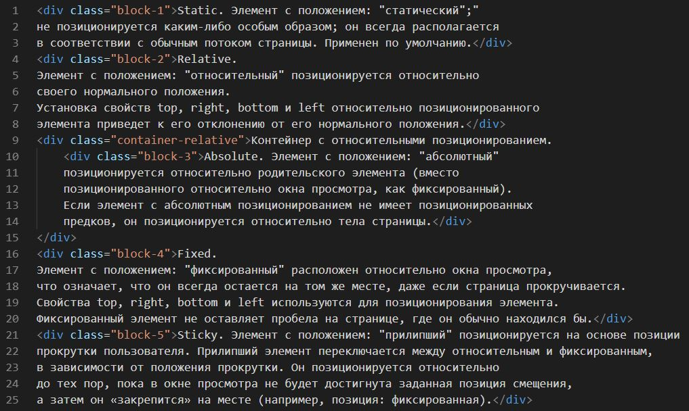
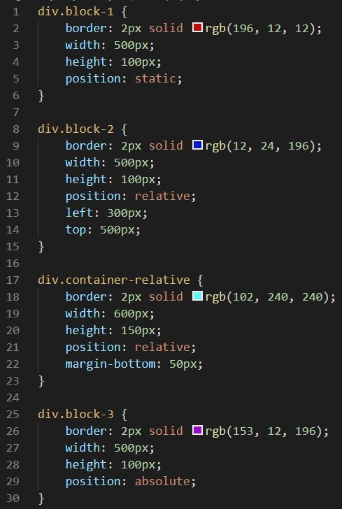
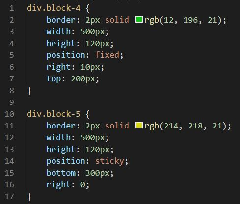

Layout - The Position Property
Отображение в браузере:
Static. Элемент с положением: "статический";"
не позиционируется каким-либо особым образом; он всегда располагается
в соответствии с обычным потоком страницы. Применен по умолчанию.
Relative.
Элемент с положением: "относительный" позиционируется относительно
своего нормального положения.
Установка свойств top, right, bottom и left относительно позиционированного
элемента приведет к его отклонению от его нормального положения.
Контейнер с относительными позиционированием.
Absolute. Элемент с положением: "абсолютный"
позиционируется относительно родительского элемента (вместо
позиционированного относительно окна просмотра, как фиксированный).
Если элемент с абсолютным позиционированием не имеет позиционированных
предков, он позиционируется относительно тела страницы.
Fixed.
Элемент с положением: "фиксированный" расположен относительно окна просмотра,
что означает, что он всегда остается на том же месте, даже если страница прокручивается.
Свойства top, right, bottom и left используются для позиционирования элемента.
Фиксированный элемент не оставляет пробела на странице, где он обычно находился бы.
Sticky. Элемент с положением: "прилипший" позиционируется на основе позиции
прокрутки пользователя. Прилипший элемент переключается между относительным и фиксированным,
в зависимости от положения прокрутки. Он позиционируется относительно
до тех пор, пока в окне просмотра не будет достигнута заданная позиция смещения,
а затем он «закрепится» на месте (например, позиция: фиксированная).
Код:
HTML
CSS
